전자기기기능사 (2003-07-20 기출문제)
1과목: 전기전자공학
1. 기전력 1.5V, 전류용량 1A인 건전지 6개가 있다. 이것을 직.병렬로 연결하여 3V, 3A의 출력을 얻으려면 어떻게 접속하여야 하는가?
- 6개 모두 직렬 연결
- 6개 모두 병렬 연결
- 2개 직렬 연결한 것을 3조 병렬 연결
- 3개 직렬 연결한 것을 2조 병렬 연결
(정답률: 79%)

2. 5㎌/150V, 10㎌/150V, 20㎌/150V의 콘덴서를 서로 직렬로 연결하고 그 끝에 직류전압을 서서히 인가 할 때 다음 중 옳은 것은?
- 5㎌ 콘덴서가 가장 먼저 파괴된다.
- 10㎌ 콘덴서가 가장 먼저 파괴된다.
- 20㎌ 콘덴서가 가장 먼저 파괴된다.
- 모든 콘덴서가 동시에 파괴된다.
(정답률: 85%)
3. 반도체의 P-N접합에 대한 설명이다. 틀린 것은?
- P형에 대하여 N형을 (+)극성으로 바이어스하는 것을 역방향 바이어스라 한다.
- P형에 대하여 N형을 (-)극성으로 바이어스하는 것을 순방향 바이어스라 한다.
- P형의 다수 반송자는 정공, N형의 소수 반송자는 정공이다.
- PN접합면의 공핍층에는 전자와 정공이 평형상태에서 많이 존재한다.
(정답률: 45%)
4. 회로에서 입력전압의 실효값이 E[V]일 때 C1 양단의 전압은 몇 V 인가?
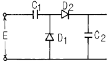
- E
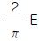
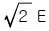
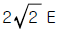
(정답률: 52%)
5. 푸쉬풀 평형변조회로에서 반송파가 제거되는 이유는?
- 입력에 신호파는 동위상, 반송파는 역위상으로 가하여지므로
- 출력 트랜스 양단에 나타나는 신호파가 동위상이므로
- 입력에 가해지는 반송파의 위상이 동위상이므로
- 출력 트랜스 양단에 나타나는 반송파의 위상이 역위상이므로
(정답률: 35%)
6. 주파수 변조법에 해당되지 않는 것은?
- 콘덴서 마이크로폰을 사용하는 방법
- 가변저항 다이오드를 사용하는 방법
- 리액턴스관을 사용하는 방법
- 위상변조에 의한 간접법
(정답률: 37%)
7. 수정발진기의 특징 중 가장 중요한 점은?
- 발진이 용이하다.
- 주파수 안정도가 크다.
- 발진세력이 강하다.
- 소형이며 잡음이 적다.
(정답률: 72%)
8. 그림과 같은 회로는?
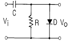
- 클램프회로
- 클리핑회로
- 피킹회로
- 트랩회로
(정답률: 68%)
9. 그림과 같이 입력측에 정현파를 인가할 때 출력파형은?
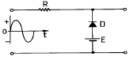
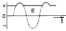
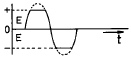
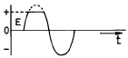
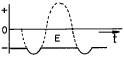
(정답률: 40%)
10. 불확정 상태가 되지 않도록 반전기를 부가한 회로는?
- T-FF
- D-FF
- JK-FF
- RST-FF
(정답률: 51%)
11. 실효값을 나타내는 것은?
- 파고율×평균값
- 파형률×평균값
- 파고율×최대값
- 파형률×최대값
(정답률: 47%)
12. 회로에서 a-c간에 30V의 전압을 인가 했을 때 b-d간의 전위차는 몇 V 가 되는가?
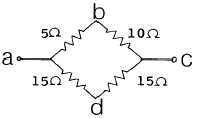
- 0
- 5
- 10
- 15
(정답률: 47%)
13. 철심을 넣은 평균반경 5cm의 환상솔레노이드에 10A의 전류가 흐를 때 내부자계가 1800AT/m이었다. 권수는 약 얼마인가?
- 27회
- 37회
- 47회
- 57회
(정답률: 31%)
14. 직류 안정화 회로에서 출력석의 역할은?
- 가변저항기의 역할
- 증폭역할
- 발진역할
- 정류역할
(정답률: 36%)
15. 연산증폭기(OP amp)의 일반적인 성질이다. 틀린 것은?
- 이상적인 회로에서 전압증폭도 Av는 무한대이다.
- 이상적인 회로에서 입력임피던스 Zi는 무한대이고 출력 임피던스 Z0 는 0 이다.
- 주파수 대역폭이 직류에서 무한대이다.
- 온도에 대한 드리프트(Drift)의 영향이 크다.
(정답률: 64%)
2과목: 전자계산기일반
16. 그림과 같은 논리회로의 출력 y 에 대한 논리식은?
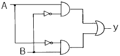
- y= AB'+A'B
- y= AB+AB'
- y= AB(A+B)
- y= AB
(정답률: 65%)
17. 서브루틴 호출이나 인터럽트 처리와 같은 동작에서 임시 저장을 위한 지정된 메모리의 다음 주소를 보관하는 곳은?
- 상태 레지스터
- 프로그램 계수기
- 메모리 주소 레지스터
- 스택 포인터
(정답률: 42%)
18. 10진수 -113을 2진수 1의 보수로 변환하여 8bit로 표현한 것은?
- 11110001
- 01110001
- 10001110
- 10001111
(정답률: 40%)
19. 컴퓨터의 기억장치로 부터 명령이나 데이터를 읽을 때 제일 먼저 하는 일은?
- 명령 지정
- 명령 출력
- 어드레스 지정
- 어드레스 인출
(정답률: 58%)
20. 다음 flowchart 기호 중 display 장치를 나타내는 것은?
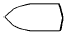
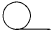
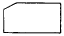
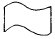
(정답률: 40%)
21. 잘못된 정보를 패리티체크에 의해 착오를 검출하고, 이를 교정할 수 있는 코드는?
- 아스키 코드
- 해밍 코드
- 그레이 코드
- EBCDIC
(정답률: 66%)
22. 마이크로컴퓨터 내부에서 마이크로프로세서와 주기억장치 및 각 주변장치 모듈 간에는 버스(BUS)를 통해 정보를 전달한다. 이 버스에 해당하지 않는 것은?
- data bus
- address bus
- register bus
- control bus
(정답률: 61%)
23. 주소 선이 8개 데이터 선이 8개인 ROM의 기억용량은?
- 1,024 바이트
- 512 바이트
- 256 바이트
- 64 바이트
(정답률: 46%)
24. 문자를 삽입할 때 필요한 연산은?
- OR 연산
- ROTATE 연산
- AND 연산
- MOVE 연산
(정답률: 52%)
25. "마이크로프로세서의 기계어 명령 형식은 ( )와( )로 구성된다" ( )안에 알맞은 용어는?
- GRAY CODE, OPERAND
- BCD CODE, OPERAND
- OP CODE, OPERAND
- OP CODE, GRAY CODE
(정답률: 73%)
26. 순서도의 역할과 거리가 먼 것은?
- 프로그램을 코딩하기가 쉽다.
- 입력과 출력의 설계를 쉽게 할 수 있다.
- 문제의 정확성 여부를 쉽게 판단할 수 있다.
- 업무의 전체적인 개요를 쉽게 파악할 수 있다.
(정답률: 39%)
27. 연산자의 기능이 아닌 것은?
- 번지 기능
- 전달 기능
- 제어 기능
- 함수연산 기능
(정답률: 40%)
28. 주기억 장치에 기억된 프로그램을 읽고 해독한 후, 각 장치에 지시신호를 전달함으로써 프로그램에서 지시한 동작이 실행되도록 하는 것은?
- 입력장치
- 출력장치
- 연산장치
- 제어장치
(정답률: 79%)
29. 오실로스코프(Oscilloscope)로 직접 측정할 수 있는 것은?
- 회전수
- 수신감도
- 파형
- 잡음지수
(정답률: 61%)
30. 다음 계기 중 오차는 다소 많으나 구조가 간단하고, 견고하여 상용 주파수에서 가장 많이 사용되는 것은?
- 전류력계형
- 열전쌍형
- 정류형
- 가동철편형
(정답률: 38%)
3과목: 전자측정
31. 변류기가 붙은 고주파 전류계의 원리도에서 그림 "1"이 표시하는 내용은?
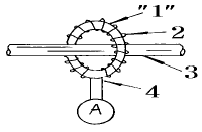
- 고주파용 코어
- 코일
- 1차 도선
- 열전대
(정답률: 52%)
32. 1차 coil의 인덕턴스가 10[mH]이고, 2차 coil의 인덕턴스가 20[mH]인 변성기를 직렬로 접속하고, 측정하니 합성인덕턴스가 36[mH]였다. 이들 사이의 상호 인덕턴스는?
- 6 [mH]
- 4 [mH]
- 3 [mH]
- 2 [mH]
(정답률: 62%)
33. 계기 눈금의 부정확, 외부자장 등에 의하여 생기는 오차는?
- 개인적 오차
- 계통적 오차
- 우연 오차
- 파형 오차
(정답률: 68%)
34. 계수형 주파수계로 1분 동안 반복 회수가 2160회 였다면 피측정 주파수는 몇 [Hz]인가?
- 18
- 36
- 360
- 2160
(정답률: 78%)
35. 고주파수 측정에 사용되는 주파수계는?
- 진동편형 주파수계
- 헤테로다인 주파수계
- 가동철편형 주파수계
- 전류력계형 주파수계
(정답률: 58%)
36. 고주파 전력 측정 방법이 아닌 것은?
- 의사 부하법
- 3전력계법
- C-C형 전력계
- C-M형 전력계
(정답률: 47%)
37. 표준 신호 발생기의 구비 조건이 아닌 것은?
- 출력 레벨이 고정일 것
- 발진 주파수의 확도와 안정도가 양호할 것
- 넓은 범위에 걸쳐서 발진 주파수가 가변일 것
- 변조도가 정확히 조정되고 변조 왜곡이 적을 것
(정답률: 39%)
38. 아날로그 계기에 비해서 디지털 멀티미터의 장점에 속하는 것은?
- 아날로그 계기보다 회로가 단순하다.
- 아날로그 계기보다 견고하고 열에 강하다.
- 아날로그 계기보다 개인 오차를 줄일 수 있다.
- 아날로그 계기보다 제작 단가가 훨씬 저렴해진다.
(정답률: 64%)
39. 열전형 계기의 특징과 거리가 먼 것은?
- 미소 전류에 동작한다.
- 인덕턴스의 값이 크다.
- 고주파 전류 측정에 많이 사용한다.
- 지백 효과(seebeck effect)를 이용한다.
(정답률: 29%)
40. 인덕턴스를 L, 커패시턴스를 C 라고 했을 때, 흡수형 주파수계의 공진 주파수를 나타낸 식은?
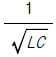
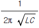
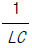
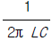
(정답률: 81%)
41. 유전가열의 특성 중 옳지 않은 것은 ?
- 고주파 발진기의 효율이 낮다(50 - 60%).
- 설비비가 비싸다.
- 온도 상승이 늦다.
- 피열물의 모양에 제한을 받는다.
(정답률: 51%)
42. 유전가열의 공업제품에 대한 응용에 해당하지 않는 것은?
- 합성수지의 예열 및 성형가공
- 합성수지의 접착
- 목재의 접착
- 목재의 세척
(정답률: 75%)
43. 유도가열로의 전원 장치로 사용하지 않는 것은?
- 불꽃방전 유도로
- 와류 방전식 유도로
- 전자관식 고주파 유도로
- 전동발전기식 고주파 유도로
(정답률: 39%)
44. 페라이트 진동자는 니켈과 같은 자기 왜형진동자에 비하여 기계적 강도는 약하나 효율이 높으므로 주로 어디에 사용되는가?
- 초음파 용접기
- 초음파 세척기
- 초음파 진단기
- 초음파 치료기
(정답률: 57%)
45. 반도체의 성질을 가지고 있는 물질(형광체를 포함)에 전장을 가하였을때 생기는 현상을 무엇이라고 하는가?
- 광전효과
- 주울효과
- 전장발광
- 톰슨효과
(정답률: 79%)
4과목: 전자기기 및 음향영상기기
46. 다음 그림에서 전달함수는?
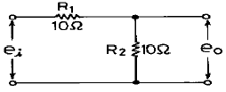
- 0.5
- 1
- 2
- 10
(정답률: 38%)
47. 목표값이 시간에 따라 변화하고 출력이 이것을 추종할 때의 제어는?
- 정치 제어
- 추치 제어
- 과도 제어
- 프로세스 제어
(정답률: 54%)
48. 제어량의 변화를 일으킬 수 있는 신호중에서 기준 입력신호 이외의 것을 무엇이라 하는가?
- 제어동작 신호
- 외란
- 주되먹임 신호
- 제어 편차
(정답률: 79%)
49. 자동제어에서 인디셜(indicial) 응답을 조사할 때 입력에 어떤 파형을 가하는가?
- 사인파
- 펄스파
- 스텝(step)파
- 톱니파
(정답률: 47%)
50. 공정제어계 시스템에서 신호변환기나 지시기록계 등이 포함될 수 있는 부분은?
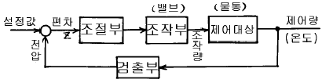
- 조절부
- 조작부
- 검출부
- 제어대상
(정답률: 46%)
51. 다음 중 광기전력 효과를 이용한 것은?
- 온도제어
- 전자냉동
- 태양전지
- Cds(황화카드뮴) 광전소자
(정답률: 77%)
52. 수퍼헤테로다인 수신기의 수신주파수가 850[㎑], 국부발진 주파수가 900[㎑]일 때, 영상 주파수는?
- 950[㎑]
- 850[㎑]
- 1000[㎑]
- 1100[㎑]
(정답률: 55%)
53. 안테나의 성능을 표시하는 것에 해당되지 않는 것은?
- S/N비
- 이득
- 지향성
- 임피이던스
(정답률: 28%)
54. 공중선의 전류가 57.3A이고 복사저항이 250Ω , 손실저항이 50Ω 일 때 공중선 능률은 약 얼마인가?
- 0.83
- 0.2
- 1.2
- 50
(정답률: 48%)
55. 수신안테나의 특성으로 사용하지 않는 것은?
- 종횡비
- 대역폭
- 지향성
- 이득
(정답률: 57%)
56. 자기테이프와 헤드의 접촉면에 있어서의 간격이 커질 경우 손실도 커지게 되는 것은?
- 두께 손실
- 와류 손실
- 스페이싱 손실
- 갭 손실
(정답률: 67%)
57. VTR의 조작기능 중 재생시에만 사용 가능한 것은?
- 트래킹(TRACKING)
- 카운트 메모리(Count Memory)
- 포우즈(PAUSE)
- 자동주파수 조정(AFC)
(정답률: 45%)
58. 등화 증폭기의 역할로서 거리가 먼 것은?
- 고역에 대한 이득을 낮추어 원음 재생이 실현되도록 한다.
- 고음역의 잡음을 감쇠시킨다.
- 라디오의 음질을 좋게 한다.
- 미약한 신호를 증폭한다.
(정답률: 52%)
59. 다음 회로의 입력이 X1=1, X2=0 일 때 출력은?
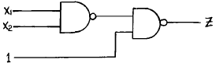
- 0
- 1
- 0 이 될수도 있고 1 이 될 수도 있다.
- 0 과 1 이 교대로 출력된다.
(정답률: 65%)
60. 로터리 스위치식 튜우너의 주파수 변화 회로에는 어떤 결합방식이 주로 사용되는가?
- 저항결합
- 임피이던스결합
- 전자결합
- 정전결합
(정답률: 34%)
하지만 문제에서 원하는 출력은 3V, 3A이다. 따라서 전압은 3V로 맞추고 전류는 3A로 늘려야 한다. 이를 위해서는 건전지를 병렬 연결해야 한다. 병렬 연결하면 전압은 그대로 유지되고 전류는 누적된다. 따라서 2개를 직렬 연결하여 3V, 2A의 출력을 만들고, 이를 3조 병렬 연결하여 전류를 누적시켜 3V, 3A의 출력을 얻을 수 있다.